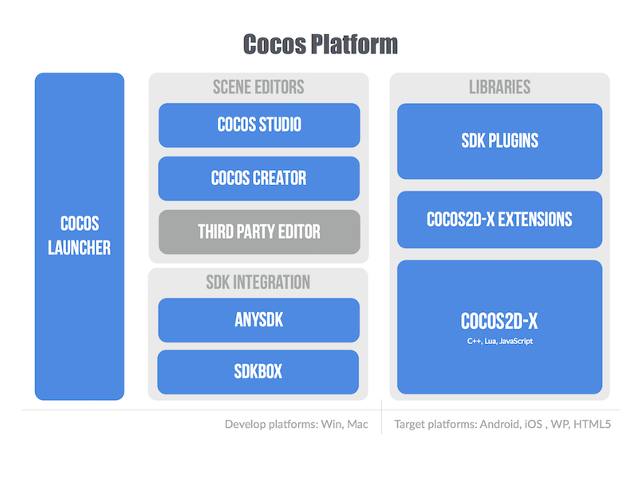
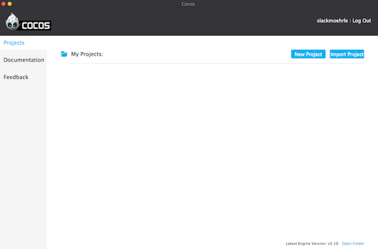

Cocos
What is Cocos?
Cocos is a platform to create games: it includes an editor, a game engine, it also includes integration with the popular services every developer expects... everything is packaged in a convenient installer. It is a complete ecosystem.

Historically, developers would download either a .zip of the latest release or become bleeding edge by staying in sync with our GitHub repo. When dealing with new releases, this was a manual integration effort for developers. If you had multiple projects, depending upon your setup, you may have even had to perform a manual integration for each project.
Not anymore, utilizing Cocos. Cocos had been available as a console only app with limited functionality for creating projects as well as compiling and running your applications. However, now, it is your simple solutions to managing your entire project base. Cocos provides:
- A unified setup for both Cocos2d-x and Cocos. This allows you to stay up to date with the latest Cocos2d-x releases. This includes using precompiled binaries and source code, in a single place.
- Easy integration with SDKs for 3rd party services: Facebook, IAP and many more.
- Developers a channel to provide feedback and get support, directly within Cocos, making it simple to contact the engine team for help.
What is the workflow?
Historically, you probably downloaded a .zip from the website or if you stayed a hipster and pulled from the GitHub repo. Downloading the .zip will no longer be available. Github, however, will always remain available.
The workflow is now to use Cocos for everything! Yes, it handles everything from creating projects, editing project properties and settings, integrating SDKBOX services, compiling and running your code and building your user interface in Cocos Studio.
Cocos is simple with a clean, modern interface for maximizing your productivity. Take a look:
The main window:

Creating a new project:

Now all of your projects in a single place:

Precompiled libraries versus source code
Cocos now makes it easy for developers to use precompiled libraries instead of the source code. Why might you want to do this? Speed for one! Using precompiled libraries eliminates the need to compile the Cocos2d-x source each time. This eliminates the long thumb twiddling between compile sessions. Second, updating to the latest version is simple. You download directly from within Cocos and modify your projects settings to switch to the latest version.
SDK Integration
Cocos provides many services that you can integrate into your apps for FREE and you can add services to your apps quickly and stay on top of services updates. As new versions of SDKs become available you can download directly from within Cocos and modify your projects settings to update to the latest version.
Currently, SDKBOX is integrated into Cocos. You can read more about SDKBOX and the services it offers in the Services Docs.
Using Cocos
Creating a new project
Creating a new project with Cocos is easy, just follow a few simple steps. Using Cocos, you are creating a Cocos2d-x project with complete flexibility to change your projects settings at any time. To create a new new project:
- Open Cocos
- Click New Project
- Specify your project settings. Let's make sure we know what the settings are:
| Setting | Description |
|---|---|
| Project Name | the name of the project to be created. |
| Project Path | the folder in which your projects are located. |
| Engine Version | version of Cocos2d-x you will use to create this project. |
| Engine Type |
|
| Project Language |
|
| Editor | whether or not to create a Cocos Studio project. Cocos Studio is the official editor of Cocos2d-x. |
| SDKs | which SDK services are available to add to your project. These services wrap up all the libraries and APIs from the service providers. All will be integrated for you to update the settings and call the service from your project. |
- Click Create